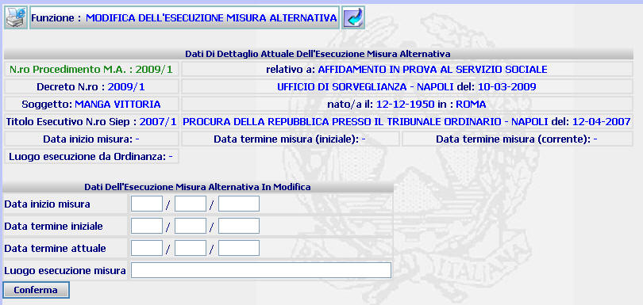

MODIFICA ESECUZIONE DELLA MISURA ALTERNATIVA: La funzione consente di inserire o modificare i dati relativi all'esecuzione della misura alternativa.
LE MASCHERE VIDEO
La funzione viene realizzata attraverso la maschera seguente in cui compare l'elenco dei procedimenti iscritti con riferimento ad un procedimento di esecuzione di misura alternativa

COME FARE PER ...
Per inserire o modificare i dati relativi all'esecuzione della misura alternativa l'utente deve:
CAMPI
I campi da compilare sono i seguenti:
| Data inizio misura | Campo nel quale va inserita la data in cui la misura alternativa ha inizio |
| Data termine iniziale | Campo nel quale va inserita la data di fine misura così come risulta al momento dell'inizio della stessa |
| Data termine finale | Campo nel quale va inserita la data di fine misura aggiornata volta per volta allorquando intervenga un evento che modifichi l'iniziale fine misura |
| Luogo esecuzione misura | Campo nel quale va indicato il luogo attuale nel quale viene eseguita la misura alternativa |
PULSANTI
Sono presenti i pulsanti
 e
e
 facenti parte del gruppo di
pulsanti di "Uso Comune"
facenti parte del gruppo di
pulsanti di "Uso Comune"
BOTTONI
Oltre ai comandi funzionali relativi al menù verticale è presente il seguente bottone:
|
COMANDI |
DESCRIZIONE |
|
|
A fronte di tale comando, il sistema ripresenta la maschera aggiornata dell'elenco procedimenti relativi all'esecuzione della misura alternativa |